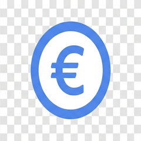
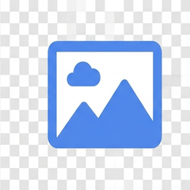
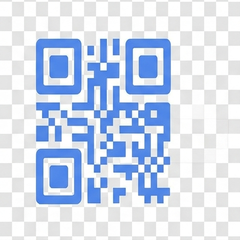
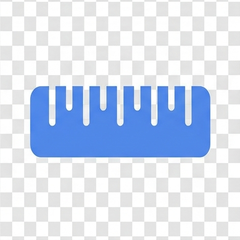
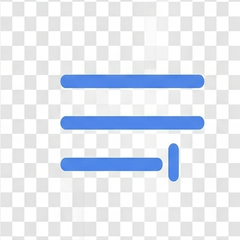

Des outils simples, gratuits, sans inscription
Tout fonctionne directement dans votre navigateur : aucune donnée n'est envoyée à un serveur, aucun compte requis.
Générateur de mot de passe
Mots de passe forts et aléatoires, personnalisables, avec indicateur de robustesse.

Calculateur salaire net / brut
Estimez votre salaire net à partir du brut (ou l'inverse) selon votre statut.

Compresseur d'image
Réduisez le poids de vos photos (JPEG/PNG/WebP) sans les envoyer en ligne.

Générateur de QR code
Créez un QR code pour un lien, un texte ou une carte de visite, en un clic.

Convertisseur d'unités
Longueur, poids, température, volume — conversions instantanées.

Compteur de mots & caractères
Analysez un texte : mots, caractères, phrases, temps de lecture estimé.
À propos d'Outilio
Outilio est une collection d'outils web gratuits, pensés pour être rapides et respectueux de la vie privée : le traitement se fait entièrement côté client, dans votre navigateur. Aucune inscription, aucune donnée stockée sur un serveur.